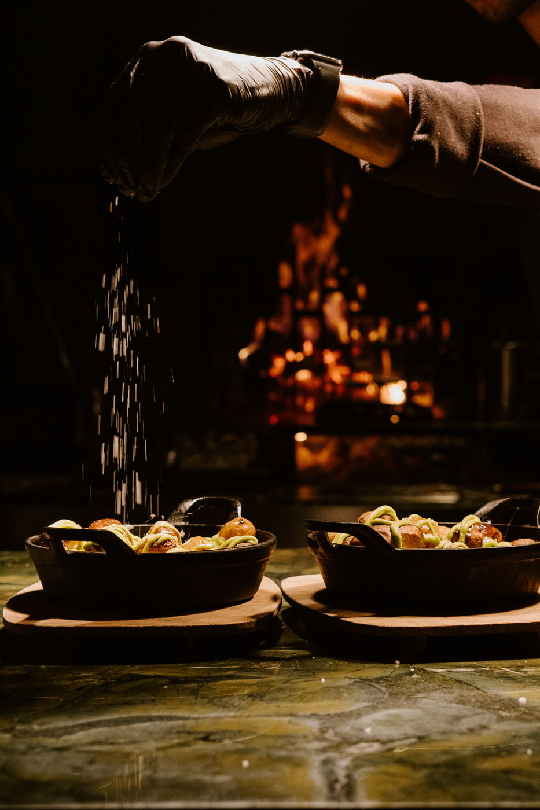
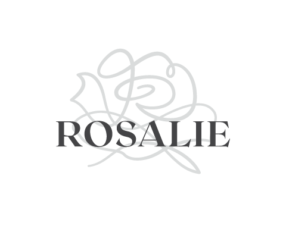
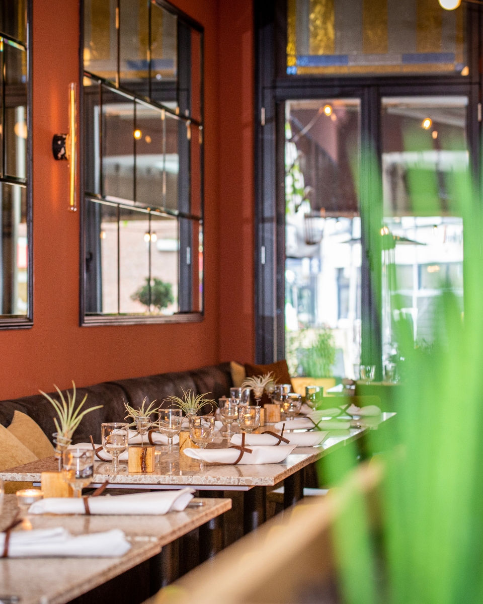
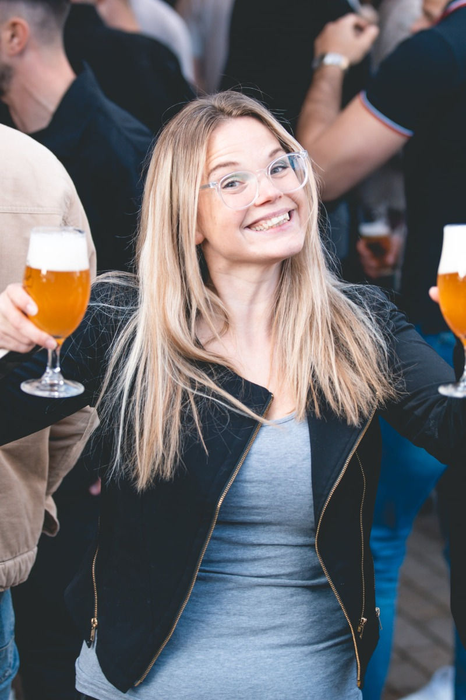
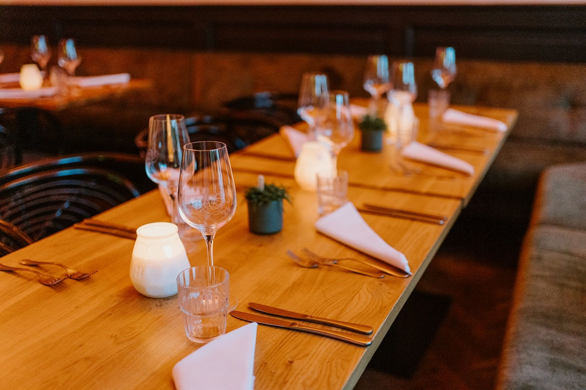
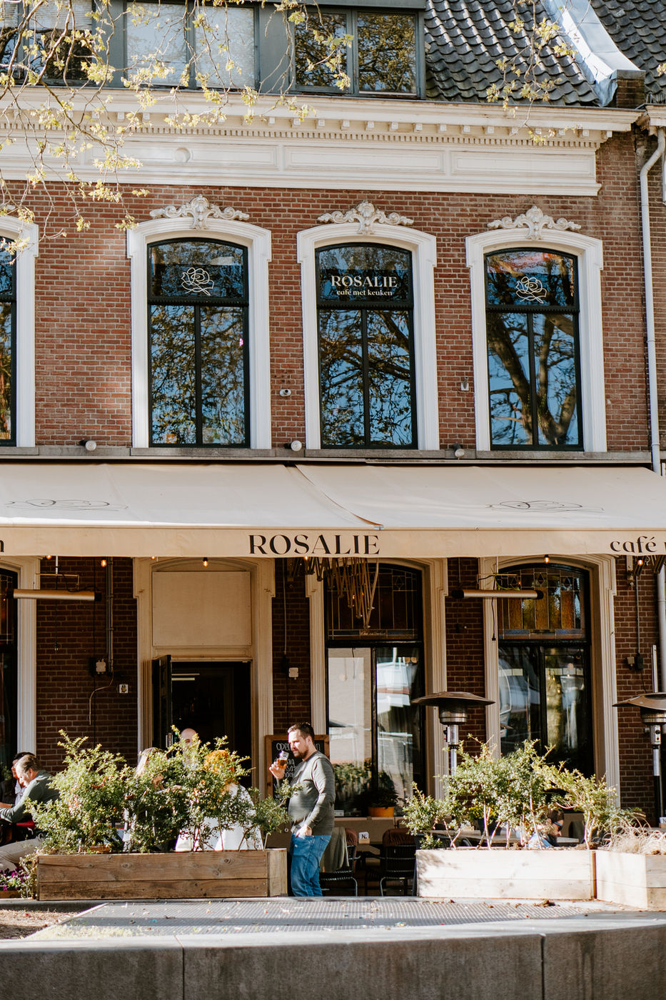

Koken op open vuur, aan de Korte Heuvel
Restaurant-café in de binnenstad van Tilburg, naast Poppodium 013. Seizoensgerechten van het houtvuur, steengoede wijnen en ruim 70 speciaalbieren.

Over Rosalie
Verrassend, toegankelijk en 'kei' lekker.
Rosalie is een restaurant-café van deze tijd, waar je vrienden ontmoet en maakt. Je kunt er binnenvallen voor een hapje en een drankje. Rosalie serveert steengoede wijnen en een royaal assortiment bier in blik, op fles en van de tap. De internationale gerechten worden bereid op open vuur.
In onze keuken brandt altijd het houtvuur. Met passie en vakmanschap bereiden we er seizoensgroenten en hoogwaardig vlees en vis uit de buurt. Naast het Menu van de Chef is er een wisselende selectie, gekozen op wat onze leveranciers op dat moment hebben. Wees welkom voor de Sunday Roast, een avondvullend diner of een borrel op het verwarmde terras, in het café of in het zaaltje op de eerste verdieping.
Tot snel, liefs Rosalie
Kies jouw avond
Laat je verrassen door de chef, ga voor à la carte van het open vuur of kies een van de burgers. Elke week kiezen onze chefs daarnaast weekspecials (vlees, vis en/of vega) die passen bij het seizoen of wat er in Tilburg te doen is.
Menu van de Chef
Of 5 gangen voor € 59, 6 gangen voor € 66. Met brood vooraf, ook volledig vegetarisch. Bijpassend wijn- of bierarrangement € 27 / € 33 / € 39.
Bier & Spijs
Vijf gangen van het open vuur, elke gang met een bier van La Trappe. Prijs inclusief de bieren, elke dag te bestellen.
Sunday Roast
Elke zondag vanaf 14.00 uur. Charcuterie en kaas vooraf, vlees van het open vuur met aardappels uit de houtoven en groenten, en een dessert.
À la carte & burgers
Vlees, vis en vega van het vuur, of een beef- of oesterzwamburger met brioche, cheddar, augurk en gerookte ketchup.
Speciaalbier in Tilburg
Bij Rosalie draait speciaalbier niet om de grootste keuze, maar om de beste selectie. Van frisse blondbieren en hoppige IPA's tot quadrupels, trappisten, stouts en sours. De kaart verandert continu, dus er is altijd iets nieuws te ontdekken.
Rosalie's Craft Selection is een steeds wisselende selectie van de beste craftbieren: kleine oplages, hoge Untappd-scores en alleen zolang de voorraad strekt. Ons actuele bieraanbod staat op Untappd, waar je je favorieten direct kunt inchecken. Suggesties voor nieuwe bieren? Laat het ons weten tijdens je bezoek.
We werken samen met brouwerijen als Royal Swinkels, La Trappe, De Molen, 't Uiltje en Frontaal.
Bierproeverijen
Fladderen met 't Uiltje € 32,50 p.p.
Vijf bieren van 't Uiltje in blik of van de tap. Elke maand nieuwe Uiltje-bieren van de tap, dus geen proeverij is hetzelfde.
Dare to Drink Different € 32,50 p.p.
Vijf willekeurige bieren in verschillende stijlen in proefglazen van 0,15 liter, met een plateau van Rosalie met hammetjes uit onze charcuterie.
La Trappe Op, La Trappe Af € 32,50 p.p.
De bieren van La Trappe in de juiste volgorde, van Puur naar Quadrupel en weer terug. In proefglazen van 0,15 liter.
Voor kleine en grotere groepen, in het zaaltje of op het terras. Ideaal voor vriendenuitjes, bedrijfsborrels of als start van een avond uit.

Bier & Spijs met La Trappe
Samen met Brouwerij de Koningshoeven en La Trappe, de enige Nederlandse trappistenbrouwerij, bereiden onze chefs een 5-gangen menu op open vuur. Bij elke gang hoort een zorgvuldig gekozen La Trappe. Een fris blondbier maakt een romige saus lichter, een donkere quadrupel past bij langzaam gegaard vlees of chocolade.
- Voorgerecht, twee tussengerechten, hoofdgerecht en nagerecht
- Geschonken in La Trappe glaswerk en naar wens bijgeschonken
- Alle bieren kun je inchecken in Untappd
- Binnen in het restaurant of buiten op het terras
- Ook voor groepen, klein en groot
- Dieetwensen en allergenen? Daar houden we graag rekening mee
per persoon, inclusief de beschreven bieren. Reken op circa 3 à 4 uur tafelen. Elke dag te bestellen.
Reserveer Bier & SpijsHet zaaltje
Op de eerste verdieping van Rosalie ligt ons zaaltje: voor private dining, borrels, feesten en vergaderingen in het centrum van Tilburg. Voor groepen vanaf 10 personen, tot 70 à 80 gasten. Je betaalt geen zaalhuur, alleen voor eten en drinken.

Voor bijvoorbeeld
- Verjaardag of jubileum
- Bedrijfsborrel of teambuilding
- Familiediner of private dining
- Afstudeerborrel of reünie
- Vergadering of presentatie
Wat er is
- Eigen bar voor drankjes op maat
- Eigen toiletten
- Geluidsinstallatie voor muziek of toespraken
- Vaste gastheer of gastvrouw als aanspreekpunt
Menu van de Chef voor groepen
Bereid op open vuur met seizoensproducten. Drankarrangementen zijn mogelijk op basis van nacalculatie of afkoop, met opties voor speciaalbier, wijn en alcoholvrij.
Wij zorgen voor alles, van ontvangst tot afscheid, en denken mee over de invulling van je avond.
Vraag een offerte aanOfficieel opgenomen in de Business Restaurants Top 500: geselecteerd op kwaliteit, gastvrijheid en zakelijke mogelijkheden zoals private dining, vergaderen, zakelijke lunches, diners en bedrijfsfeesten.
Feestdagen bij Rosalie
De feestdagen zijn het moment om samen te komen en het jaar af te sluiten met collega's, vrienden en familie. Onze chef heeft speciaal voor de kerstdagen een feestelijk 5-gangen diner samengesteld. Voor vegetarische gasten en gasten met een dieetwens maken we graag een passend alternatief.
Kerstborrel of diner met je afdeling
Van een intieme borrel met hapjes tot een volledig verzorgd diner: ons team denkt mee. Tijdens de kerstdagen is het zaaltje op de eerste verdieping beschikbaar voor gezelschappen vanaf 12 personen.
Geef een avondje Rosalie cadeau
Een avond vol lekker eten, mooie wijnen, bijzondere bieren en gezelligheid. Cadeaubonnen in diverse bedragen, ook voor Bier & Spijs of de Sunday Roast. Online te bestellen of haal er een op bij Rosalie.
Carnaval 2027, 5 t/m 9 februari
Rosalie aan het Dweilplein. De keuken is vrijdag tot en met dinsdag open.
- Driegangen carnavalsmenu € 33, in 3 shifts per avond: 17.30-19.00, 19.00-20.30 en na 20.30
- À la carte: brood met smeersels € 7, beef burger € 18, oesterzwamburger € 18, kipdijen € 21, BBQ steak € 23, chocolademousse € 13
- Carnavalsontbijt vrijdag t/m dinsdag van 10.00 tot 13.00 uur, buffet € 11 p.p.

Terras naast Poppodium 013
Aan de kop van de bruisende Korte Heuvel, op een paar stappen van Poppodium 013, ligt ons grote, schaduwrijke terras onder de bomen. Kom voor een speciaalbier van de tap, een goed glas wijn of een compleet diner van het open vuur. In de winter zit je op het verwarmde terras.
Naar een concert in 013? Kom vooraf voor een borrel, een snelle hap of uitgebreid diner, of schuif na afloop aan voor een speciaalbier. Rosalie ligt op 100 meter van de entree van 013 en we zorgen dat je op tijd bij je concert bent.
Bezoek Rosalie
| Maandag | gesloten |
| Dinsdag | vanaf 17.00 |
| Woensdag | vanaf 17.00 |
| Donderdag | vanaf 17.00 |
| Vrijdag | vanaf 16.00 |
| Zaterdag | vanaf 14.00 |
| Zondag | vanaf 14.00 |
Met de auto
Tivoligarage, ingang via Spoorlaan 300, uitgang via Veemarktstraat (1 min lopen). Of parkeerterrein Duvelhok, Dunantstraat 20 (ca. 2 min lopen).
Met de fiets
Direct naast Rosalie staan meerdere fietsrekken.
Te voet vanaf het station
Vanaf Tilburg Centraal loop je in ongeveer 10 minuten via het Pieter Vreedeplein en de binnenstad naar Rosalie.
Werken bij Rosalie
We zoeken medewerkers bediening, met flexibele uren. Interesse? Mail naar info@rosalie-tilburg.nl.